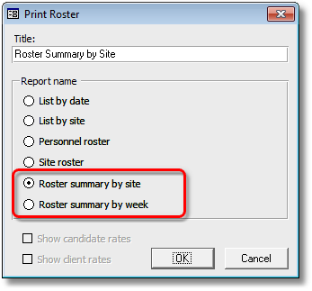
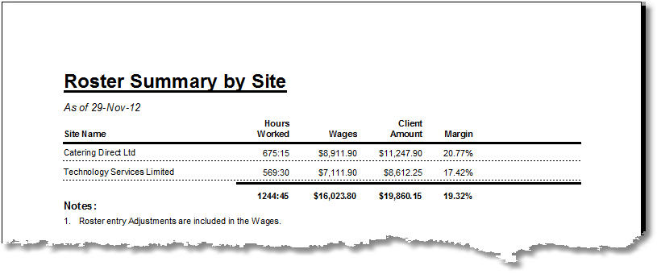

|
|
PRS News & Tips | December 2012 |
Latest News
We’ve just released PRS 8.0.9.
To download and upgrade go to the Installing the Latest PRS Client section on our Updates web page and follow the instructions.
The PRS runs on the Windows 8 desktop
Unless you’ve been living under a rock you will probably aware that Microsoft has recently released Windows 8, a new version of Windows. As of version 8.0.9 the PRS runs under Windows 8.
With respect to Windows 8 itself, our advice is to stick with Windows 7 or Windows XP on the desktop for the for foreseeable future (new operating systems are complex beasts and take a year or two to settle in).
If you are new to Windows 8 and you plan to use it on a desktop PC with desktop applications you will find the out-of-the-box experience frustrating. We did, so Stuart wrote a Blog post which explains how to reclaim the familiar Windows Desktop.
What’s New in PRS 8.0.9
Adjustments for Invoices
 in version 8.0.9
in version 8.0.9
A new Adjustments currency field to the Invoice form allows non-billing related charges to be added to an invoice.
-
Contributes to invoice total.
-
Contributes to invoice GST calculation.
-
Does not contribute to billings calculations.
-
Displayed in invoice reports.
-
Exported with invoice data.
-
Bookmarked for invoice templates.
Roster Summary Reports
in version 8.0.9
We’ve added two new Roster reports which summarise outgoings and income by Site and by week and show profit margin percentages. The new reports are accessed by pressing the Print button on the Roster form.


Group Notes by Consultant Occupation
in version 8.0.9
We have added a Consultants with occupation Notes selection option to the Notes reports and Notes Tool. This allows you to search and report on specific recruitment divisions or branches.
You can use wildcards when entering the Consultants with occupation. You can also use wildcards when specifying Note types. In the following example all notes with note type starting with the word Client that were created by consultants with occupation Sales Recruitment NSW will be selected.

For a full list of the changes since the previous release see the PRS Changelog web page.
Tips and Tricks
Categorising Clients
It’s very useful to be able to search and report on selected client groups. You can do this by creating and assigning industries that reflect the client categories to the client’s Site record. For example you could assign an “industry” called Preferred Supplier and then find and report on vacancies belonging to those clients.
Need help?
Our Support web page explains how to get answers to PRS questions and includes links to articles on Maintaining Database Reliability and Performance and PRS Best Practice Deployment.
|
Important
|
If you no longer wish to receive this newsletter please email support@prshq.com with the word UNSUBSCRIBE in the subject line. |